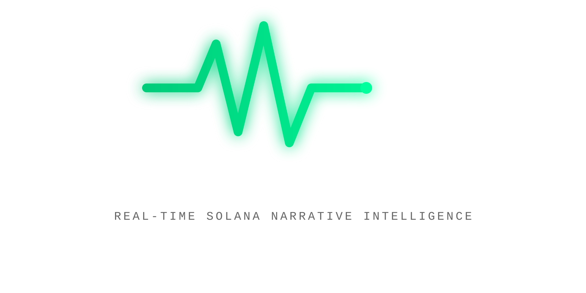

Real-time Solana narrative intelligence — in your pocket, with wallet-native action.
Hype cycles outrun price, and most "mobile" crypto tools are just websites in a shell — no wallet, no awareness of your phone, no moment-of-momentum action.
One loop — listen, understand, act, stay alerted — wired end-to-end with real data.
Tap it. Straight into that pair — price, rug-screen, chart link, wallet, swap.
That is the whole thesis, end to end, on one lock screen.
Pulse Pocket is the Narrative Radar subsystem of the Pulse platform, shipped as a real vertical slice. What's not built is said so — in the app, the repo, and this deck.
We took the one slice that could exist for real on a phone in 30 days — and shipped it. The rest of the platform is the roadmap, and we said so.
Try it: installable Android APK · fully working pipeline · no backend to break.
Built by @NathanOyewole · Solana Mobile CLOCK IN · Not financial advice.